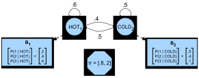
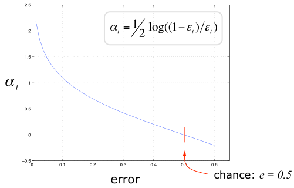

09 Combining Learning Modules
Advanced Machine Learning
Malte Schilling, Neuroinformatics Group, Bielefeld University
Markov Models
Recap - Markov Chain
In a Markov Chain, only the recent past is considered (\(L\) is the order of the Markov chain):
\[ p(v_t | v_1, ..., v_{t-1}) = p(v_t | v_{t-L}, ..., v_{t-1}) \]
The joint probability of a time series can now be expressed as a first order Markov chain: \[ p(v_{1:T}) = p(v_1) p( v_2 | v_1) ... p(v_T | v_{T-1}) \]
A chain is called stationary when the transitions between states are time-independent, i.e. \(p(v_t =s'| v_{t-1} = s)\) is equal to a function \(f(s, s')\).
(Barber 2012)
Equilibrium Distribution
For a given Markov Chain, it is interesting to consider how the marginal probability changes over time. We might be interested in the probability of being in a specific state:
\[ p(x_t = i) = \sum_j \underbrace{p(x_t = i | x_{t-1} = j)}_{P_{ij}}p(x_{t-1} = j) \]
When repeatedly sampling new states this leads to a probability distribution over all states: \[ \vec{p}_t = \mathbf{P}^{t-1} p(x_1) \]
If, for \(t \rightarrow \infty\), \(\vec{p}_\infty\) is independent of the initial distribution \(p(x_1)\), then \(p_\infty\) is called the equilibrium distribution of the chain.
Example (Recap): Transition Matrix of Weather in the Land Oz
- There are never two nice days in a row.
- After a nice day, it is as likely to have snow as rain the next day.
- After snow or rain, there is an even chance of having the same the next day or switch to one of the others.
\[ \mathbf{P(\text{Rain - Nice - Snow})} = \left( \begin{array}{ccc} 0.5 & 0.25 & 0.25 \\ 0.5 & 0. & 0.5 \\ 0.25 & 0.25 & 0.5 \end{array} \right) \]
(Grinstead and Snell 2003)
Example: Weather in the Land Oz
Long term weather in Oz: Powers of the Land of Oz transition matrix.


(Grinstead and Snell 2003)
Example Application: PageRank Algorithm for Websites
We define a Matrix that reflects connections between webpages: \(A_{ij}\) is set to \(1\) if website \(j\) has a hyperlink to \(i\) and it is set to \(0\) otherwise.
From this, we setup a Markov transition matrix with the elements: $ P_{ij} = $
- When jumping from website to website, the equilibrium distribution component \(p_\infty (i)\) is the relative number of times we will visit website \(i\). This can be interpreted as the ‘importance’ of website \(i\).
- For each website \(i\): collect a list of associated words associated with that website. From this one can construct an inverse list for searching the web ranked by importance.
(Barber 2012)
Markov Assumption
General idea is that only the recent past is important.
Markov Assumption
The Markov Assumption makes this explicit for the probabilities of a sequence: when predicting the future, only the present matters, but not the past.
\[ P(x_t = i| x_1 ... x_{t−1}) = P(x_t = i| x_{t−1})\]
Hidden Markov Model
- Even a second-order Markov assumption might not be sufficient to represent long-range temporal dependencies.
- But for higher order models the number of parameters will blow up.

- As an alternative: we assume an underlying hidden process that can be modeled by a first-order Markov chain, but the observation of the data is disturbed by noise.
- Such a model is known as a Hidden Markov Model.
(Barber 2012)
Hidden Markov Model
A HMM \(\lambda\) defines a Markov chain on hidden/ latent variables \(h_{1:T}\). The observed/ visible variables are dependent on the hidden variables through an emission probability \(p(v_t|h_t)\). This defines a joint distribution
\[ p(h_{1:T}, v_{1:T}) = p(v_1 | h_1) p(h_1) \prod_{t=2}^T p(v_t|h_t) p(h_t | h_{t-1}) \]
For a stationary HMM the transition and emission probability distributions don’t change over time.
(Barber 2012)
Hidden Markov Model Parameters
Transition Distribution
The transition distribution represents the probabilities of transitioning from one hidden state to another – this results in an \(H \times H\) transition matrix.
The probability of a state depends only on the previous state (Markov Assumption).
Emission Distribution
The emission distribution \(p(v_t | h_t)\) describes in a matrix for each of the hidden states the probability of emitting one of \(V\) observations. This results in a \(V \times H\) matrix.
The probability of an output observation depends only on the hidden state at that point in time.
Example: Ice Cream Season
We want to infer the weather of a past summer from Jason Eisner’s diary in which he reported how much ice cream he ate a particular day.
There are only hot or cold days - and he at least ate one ice cream and at most three. The numbers of ice cream (observations) are dependent on how the temperature (hidden state) was that day.

(Eisner 2002)
Characteristic Problems for HMMs
Problem 1 (Likelihood)
Given an HMM \(\lambda = (\mathbf{T}, \mathbf{E})\) and an observation sequence \(\vec{o}\), determine the likelihood \(P(\vec{o}| \lambda )\).
Problem 2 (Decoding)
Given an observation sequence \(\vec{o}\) and an HMM \(\lambda = (\mathbf{T}, \mathbf{E})\), discover the best hidden state sequence \(\vec{q}\).
Problem 3 (Learning)
Given an observation sequence \(\vec{o}\) and the set of states in the HMM, learn the HMM parameters \(\mathbf{T}\) and \(\mathbf{E}\).
(Rabiner and Juang 1993)
Computation of the Likelihood
Task: Given an HMM \(\lambda = (\mathbf{T}, \mathbf{E})\) and \(\vec{o}\), determine the likelihood \(P(\vec{o}| \lambda )\).
Example: Observations are he ate \(3\) ice creams, the next day \(1\) and a third day \(3\).
Knowing the weather simplifies this to:
\[ P(\vec{o} | \vec{q}) = \prod_{i=1}^{T} P(o_i | q_i) %= P (3 |\text{hot}) \times P (1 |\text{hot}) \times P (3 |\text{cold}) \]
We don’t know the hidden sequence – and have to weight this by the probability of a weather sequence which gives us the joint probability:
\[ P(\vec{o}, \vec{q}) = \prod_{i=1}^{T} P(o_i | q_i) \times \prod_{i=1}^{T} P(q_i | q_{i-1}) \]
(Jurafsky and Martin 2000)
Likelihood Computation
The likelihood of a certain observation sequence can now be calculated as the weighted sum of the probabilities of observing that particular observation sequence when following that particular hidden state sequences.
\[ P ( \vec{o}) = \sum_{\vec{q}} P(\vec{o}, \vec{q}) = \sum_{\vec{q}} P(\vec{o} | \vec{q}) P(\vec{q}) \]
Unfortunately, for \(N\) hidden states and \(T\) time steps this approach leads to \(N^T\) possible hidden sequences which is usually not feasible to compute.
The forward algorithm is an efficient approach with a complexity of \(O(N^2 T)\) as it stores intermediate values.
Likelihood Computation: The Forward Algorithm
The forward algorithm is not computing all possible paths individually. Instead, it efficiently folds all the path leading into a state into what is called a forward trellis \(\alpha_t\):
\[ \alpha_t(j) = \sum_{i=1}^N \alpha_{t-1}(i) T_{ij} E_j(o_t) \]
(Jurafsky and Martin 2000)
Likelihood Computation: The Forward Algorithm
(Jurafsky and Martin 2000)
Decoding: Finding the Most Probable Sequence
Task: Given an observation sequence \(\vec{o}\) and an HMM \(\lambda = (\mathbf{T}, \mathbf{E})\), discover the most probable sequence of hidden states \(\vec{q}\).
Again, trying out all possible hidden state sequences is too costly. But we can use a similar approach to the forward algorithm – and first compute a forward pass trellis.
(Jurafsky and Martin 2000)
Decoding: Viterbi Algorithm
But now we as well keep track of the best state sequence that landed us in a given state (as a back pointer):
The only difference to the forward algorithm is: instead of summing, the Viterbi algorithm takes the max over the previous path probabilities.
(Jurafsky and Martin 2000)
Example: The unfair casino
While most of time the casino uses a fair dice, sometimes it briefly switches to a loaded dice with a distribution skewed towards face 6.
When sampling, we may observe data such as the following and want to decide which dice was used over time.
(Murphy 2012)
Example: The unfair casino
Vertical gray bars denote the samples that were generated using a loaded die.
Left: Filtered estimate of probability of using a loaded dice.
Right shows a smoothed estimates.
(Murphy 2012)
Inference Tasks for HMMs
- Filtering (Inferring the present) \(P(q_t | o_{1:t})\)
- Prediction (Inferring the future) \(P(q_t | o_{1:s}), t \gt s\)
- Smoothing (Inferring the past) \(P(q_t | o_{1:u}), t < u\)
- Likelihood \(P(o_{1:T})\)
- Most likely Hidden path (Viterbi alignment) \(\text{argmax}_{q_{1:T}} P(q_{1:T} | o_{1:T})\)
(Barber 2012; Murphy 2012)
Application of Hidden Markov Models
- HMMs can represent long-range dependencies between observations (in contrast to other Markov models) – importantly, the Markov property is not assumed for the observations themselves.
- Therefore, HMMs are widely used as models on sequences.
- For example, as complete black-box models for time-series prediction.
- But more often, hidden states are associated with some given temporal structure and meaning.
Application of Hidden Markov Models
- Automatic speech recognition: Observations represent features of the speech signal, and the hidden states represent the spoken word. The transition model represents a given language model, and the observation model represents an acoustic model.
- Activity recognition: Observations represent features directly extracted from a video frame. The hidden state is an activity class the person was engaged in (e.g., running, walking, sitting, etc.).
Hidden Markov Models Summary
- HMMs are a way of relating a sequence of observations to a sequence of hidden states that explain these.
- Discovering the sequence of hidden states, given the sequence of observations, is called decoding/inference.
- The Viterbi algorithm is commonly used for decoding.
- The parameters of an HMM are the transition probability matrix and the emission/observation likelihood matrix. Both can be trained with the Baum-Welch or forward-backward algorithm.
(Murphy 2012)
Combining Learners
Combining Learners
Modularisation is an important basic principle in Computer Science and Intelligent Systems:
- find a decomposition of a given complex task into more manageable subtasks,
- and build the overall solution from the solution of the subtasks.
This principle is also applicable to learning.
Simple Learners
for example, decision trees or even decision stumps, naïve Bayes, logistic regression have one huge advantage: They usually don’t overfit.
- positive: these learners show a low variance
- negative: but can have high bias
Ensemble Method
Learn many weak local models that are good in different parts of the input space.
Combine these into a single classifier.
Weighting of individual classifiers depends on input space – where a classifier is sure about its performance.
This allows for combination of Different Methods with different strenght, e.g. using different algorithms, parameters …
But this leads to the problem of how to combine these?
Boosting
General idea: use a weak learner, run it multiple times. But during each training run reweight the training data. In the end, let the learned classifiers vote.
For each iteration:
- Weight training examples – in a way that puts more attention on incorrectly classified data
- Train weak classifier generating a weak hypothesis \(h_t\)
- Calculate a strength measurement for this hypothesis: \(\alpha_t\)
Final classifier is integration of the different weak classifiers:
\[ H(\vec{x}) = sign( \sum_t \alpha_t h_t(\vec{x})) \]
(Schapire and Freund 2012)
Boosting - Schematic of Algorithm
Each base classifier \(y_m (\vec{x})\) is trained on the weighted training set (blue arrows). Weights depend on the previous classification, putting attention on errors.
In the end, all classifiers are combined through a weighted sum (depending on the performance).
(Bishop 2006)
AdaBoost
Provides the most popular (and quite simple) boosting algorithm.
Advantages:
- Adaboost provides insight which are the best “features”.
- … and what best parameters or thresholds.
- It tells how to combine the weak classifiers into a stronger classifier.
- Has good generalization properties and is quite robust to overfitting.
Requirement: weak classifier must be better than chance (error \(< 0.5\) for binary problem).
(Freund 1995; Schapire 1999)
AdaBoost Algorithm
Initially, Input given as \(N\) examples \(S_N = \{ (\vec{x_1}, y_1), ..., (\vec{x_N}, y_N) \}\).
Use a weak base learner, in our case a decision stump.
Initialize weightings of the examples equally: \(w_i = 1/N\) for all \(i = 1 ... N\)
Iterate for \(t = 1 ... T\)
- Train on weighted data set $ w_i $ and obtain a new hypothesis \(h_t(\vec{x};j_t,\theta_t)\)
- Compute hypothesis error \(\varepsilon_t\) and hypothesis weight \(\alpha_t\)
- and update example weights \(w_{t+1}\) which gives more weight to misclassifications
Output is a final hypothesis – linear combination of all \(h_t\).
Decision Stump as a Weak Classifier
Decision stump
- Simple-most type of decision tree
- Equivalent to linear classifier defined by affine hyperplane
- Hyperplane is orthogonal to axis with which it intersects in threshold \(\theta\)
Defined as:
\[\begin{align} h(\vec{x};j,\theta)=\begin{cases} +1, & \text{if $x_j > \theta$}.\\ -1, & \text{otherwise}. \end{cases} \end{align}\]
where \(x\) is (\(d\)-dim.) training sample, \(j\) is dimension
(Arras et al. 2018)
AdaBoost: Train Decision Stump
Train decision stump on the weighted data:
- first, for each dimension find a threshold \(\theta^*\)
- second, select dimension \(j^*\) for which the error becomes minimal.
\[ (j^*, \theta^*) = argmin_{j, \theta} (\sum_{i=1}^D w_t(i) I(y_i \neq h_t(x_i)) ) \]
(Arras et al. 2018)
AdaBoost: Compute Voting Weight
Compute the voting weight \(\alpha_t\) for the new hypothesis classifier.
This will be used to assign the importance for this classifier
\[\begin{align} \varepsilon_t &= \frac{\sum_{i=1}^N w_{t-1}(i) I(y_i \neq h_t(x_i)) }{ \sum_{i=1}^N w_{t-1}(i)} \\ \alpha_t &= 0.5 log((1-\varepsilon_t / \varepsilon_t) \end{align}\]

(Arras et al. 2018)
AdaBoost: Weight Update
- Weights of correctly classified samples are decreased and
- weights of misclassified samples are increased.
AdaBoost generates weak classifiers by training the next learner on the errors of the previous one.
\[\begin{align} w_{t+1}(i) = w_t(i) exp(-\alpha_t y_i h_t(x_i)) / Z_t, \\ exp(-\alpha_t y_i h_t(x_i))=\begin{cases} < 1, y_i = h_t(x_i)\\ > 1, y_i \neq h_t(x_i) \end{cases} \end{align}\]
\(Z_t\) is a normalizer (making \(w_{t+1}\) a probability distribution).
(Arras et al. 2018)
AdaBoost: Integrate into Strong Classifier
After training is completed, the different hypothesis classifiers are fixed and combined using their voting weights:
\[ H(\vec{x}) = sign( \sum_{t=1}^T \alpha_t h_t(\vec{x}) ) \]
(Arras et al. 2018; Bishop 2006)]
AdaBoost: Example Step 1
Simple toy problem with \(m = 10\) examples, three time steps.
Left box: distribution with the size of each example scaled in proportion to its weight under that distribution.
Right box: shows the weak hypothesis \(h_t\). Examples that are misclassified by \(h_t\) have been circled.
(Schapire and Freund 2012)
AdaBoost: Example Step 2 and 3
(Schapire and Freund 2012)
AdaBoost: Update weighting
(Schapire and Freund 2012)
AdaBoost: Combined Classifier
The combined classifier for the toy example: the sign of the weighted sum of the three weak hypotheses. This is equivalent to the classifier shown at the bottom.
(Schapire and Freund 2012)
AdaBoost: Summary
AdaBoost achieves the construction of a “strong” classifier from a combination of “weak” classifiers.
It combines weighting of data points to generate a diverse set of “weak” classifiers with their suitable combination into the desired “strong” classifier.
- Misclassified samples receive higher weight – have more attention of next learner.
- AdaBoost minimizes the upper bound of the training error instead of directly minimizing the training error. It chooses an optimal weak classifier and voting weight.
Data for DL and Privacy
Data for Machine Learning
(Bellwood and McCloud 2019)
Data for Machine Learning
(Bellwood and McCloud 2019)
Privacy concerns for Machine Learning Data

Availability of Big Data made current Machine Learning possible.
But there are privacy concerns:
- What kind of your data are you willing to share?
- What are different possibilities of sharing (some) data?
- … or other ways of facilitating Machine Learning?
Data for Machine Learning


(Bellwood and McCloud 2019)
Data for Machine Learning


(Bellwood and McCloud 2019)
Decentralized Learning

(Bellwood and McCloud 2019)
References
Arras, Kai, Cyrill Stachniss, Maren Bennewitz, and Wolfram Burgard. 2018. “Robotics 2 - Adaboost for People and Place Detection.” Lecture Notes, University of Freiburg.
Barber, David. 2012. Bayesian Reasoning and Machine Learning. New York, NY, USA: Cambridge University Press.
Bellwood, Lucy, and Scott McCloud. 2019. “Federated Learning.” 2019. https://federated.withgoogle.com.
Bishop, Christopher M. 2006. Pattern Recognition and Machine Learning. Springer.
Eisner, Jason. 2002. “An Interactive Spreadsheet for Teaching the Forward-Backward Algorithm.” In Proceedings of the ACL-02 Workshop on Effective Tools and Methodologies for Teaching Natural Language Processing and Computational Linguistics, 10–18. Philadelphia, Pennsylvania, USA: Association for Computational Linguistics. https://doi.org/10.3115/1118108.1118110.
Freund, Yoav. 1995. “Boosting a Weak Learning Algorithm by Majority.” Inf. Comput. 121 (2): 256–85. https://doi.org/10.1006/inco.1995.1136.
Grinstead, Charles M., and J. Laurie Snell. 2003. Introduction to Probability. AMS; AMS.
Jurafsky, Daniel, and James H. Martin. 2000. Speech and Language Processing: An Introduction to Natural Language Processing, Computational Linguistics, and Speech Recognition. 1st ed. Upper Saddle River, NJ, USA: Prentice Hall PTR.
Murphy, Kevin P. 2012. Machine Learning: A Probabilistic Perspective. The MIT Press.
Rabiner, Lawrence R., and Biing-Hwang Juang. 1993. Fundamentals of Speech Recognition. Prentice Hall Signal Processing Series. Prentice Hall.
Schapire, Robert E. 1999. “A Brief Introduction to Boosting.” In Proceedings of the 16th International Joint Conference on Artificial Intelligence - Volume 2, 1401–6. IJCAI’99. San Francisco, CA, USA: Morgan Kaufmann Publishers Inc. http://dl.acm.org/citation.cfm?id=1624312.1624417.
Schapire, Robert E., and Yoav Freund. 2012. Boosting: Foundations and Algorithms. The MIT Press.